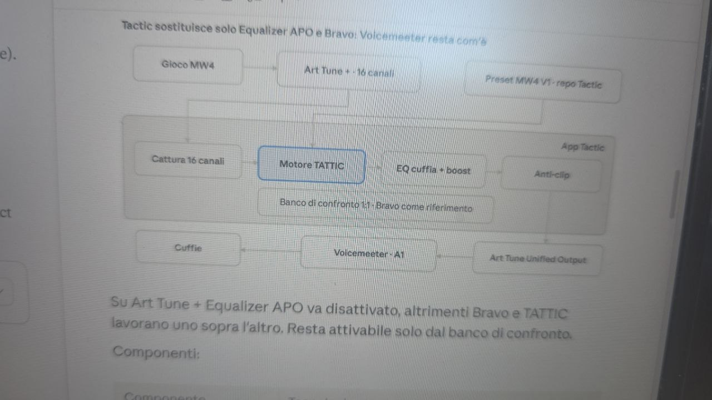

App Windows · gratis · open source
Senti tutto.
Prima di tutti.
BOOST TATTIC è l'app gratis per Windows che ripulisce l'audio di Warzone e MW4: passi, ricariche e voci nemiche davanti a tutto. Boost Audio AI Engine a 16 canali, preset competitivi ed EQ automatico per le tue cuffie.
Gratis · Open source · Windows 10/11 64-bit · ultima versione in arrivo…
Il problema
L'audio stock ti fa perdere i fight che contano.
Passi coperti
Il tuo sparo, i bombardamenti e il wash coprono i passi nemici proprio quando devi decidere se pushare o no.
Cuffie non calibrate
Ogni cuffia colora il suono a modo suo: senza EQ senti una versione falsata del campo di battaglia.
Setup fragili
Catene di Voicemeeter ed EQ che si rompono a ogni aggiornamento di Windows, con latenza in più.
Non è il tuo udito, è il mix del gioco. Un solo motore a 16 canali separa i suoni prima che arrivino alle cuffie — passi, spari, ambiente — alza ciò che conta e abbassa il resto. Tu decidi solo quanto.
Benefici
Costruito per chi gioca sul serio.
👣 Passi in primo piano
Il nemico si sente arrivare — il profilo Recon alza i passi nemici di 3 dB tagliando il resto.
🔇 Il tuo sparo non ti assorda
Spari altrui domati fino a 16 dB — resti lucido anche negli scontri a squadre ravvicinati.
🎧 EQ sulle tue cuffie
Calibrazione reale, non preset generici — 68 EQ pronti + database di 6.797 misure.
📦 Tutto in una sola app
Niente Voicemeeter, niente APO — mixer, motore, tray e avvio con Windows integrati.
🖥 Overlay + hotkey
Cambia preset senza uscire dal gioco — overlay trasparente e Ctrl+Alt per arma, stile, volume e boost fino a +12 dB.
🧠 Boost Audio AI Engine
302 parametri che ragionano sul suono — separa passi, spari e ambiente e li rimette in equilibrio in tempo reale.
Come funziona
Tre passi e sei in partita.
- 1
Installa
Scarica l'exe, installa, aggiungi il cavo virtuale gratuito VB-CABLE. La guida sotto ti porta per mano.
- 2
Instrada
Nel gioco scegli TATTIC come uscita audio; Discord e browser restano diretti alle cuffie.
- 3
Domina
Scegli il preset (parti da ClassicPlus-UltraLo), calibra l'EQ sulle tue cuffie e gioca.
Il carattere
Preciso. Funzionale.
Resistente.
- Precise — ogni passo al suo posto, ogni dB sotto controllo.
- Functional — un solo strumento che fa tutto, senza catene fragili.
- Resistant — setup che sopravvive a patch, stagioni e cambi meta.
Il flusso audio
Dal gioco alle cuffie, senza perdite.
Il gioco esce a 16 canali nel dispositivo TATTIC → il Boost Audio AI Engine cattura, elabora (preset + EQ cuffia + boost con anti-clip) e consegna un'unica uscita alle cuffie. Discord e browser restano diretti, fuori dal motore.

L'app
Un pannello, zero sbatti.
Screenshot reali in arrivo — intanto ecco dove finirà ogni schermata.
Guida installazione
Da zero a in-game in dieci minuti.
Scarica l'installer
Premi Scarica per Windows qui sopra: si apre l'ultima release GitHub con il file
.exe. Eseguilo e completa l'installazione.Installa VB-CABLE
Scarica VB-CABLE Virtual Audio Device (gratuito, vb-audio.com), installalo e riavvia. L'app lo rinomina in TATTIC da sola.
Imposta il gioco
In Warzone: audio in uscita su TATTIC, 16 canali a 48 kHz. Discord, browser e suoni di sistema restano sulle cuffie vere: li mescola Windows.
Avvia l'audio
Apri BOOST TATTIC, scegli le cuffie in uscita e premi Avvia audio: devi vedere i canali muoversi già in lobby. Da qui resta nella barra di sistema e parte con Windows.
Scegli il preset
Parti da ClassicPlus-UltraLo, poi prova gli stili TATTIC 1 (Recon consigliato per i passi). Livello arma con Ctrl+Alt+1…5.
Overlay e tasti
Attiva l'overlay da Impostazioni (serve gioco in schermo intero senza bordi). Memo rapido: Ctrl+Alt+O overlay, B bypass, ↑↓ volume, PagSuPagGiù boost.
Requisiti
Windows 10/11 64-bit · cuffie qualsiasi · VB-CABLE (gratis) · ~150 MB liberi
Non serve
Voicemeeter · Equalizer APO · scheda audio dedicata · account · carta di credito
Domande frequenti
Chiaro prima di scaricare.
È davvero gratis?
Sì. Gratis e open source, senza account né abbonamento. L'unico software esterno, VB-CABLE, è gratuito per uso personale.
Rischio il ban?
No: BOOST TATTIC non modifica il gioco, non inietta codice e non ne legge la memoria — lavora solo sull'audio di Windows come un mixer virtuale. La valutazione finale resta comunque di Activision.
Funziona con le mie cuffie?
Sì, con qualsiasi cuffia: include 68 EQ pronti e un database di 6.797 misure per calibrare la risposta sulle tue.
Serve una scheda audio particolare?
No. Basta Windows 10/11 a 64 bit e un paio di cuffie. Tutto il resto è software.
L'overlay funziona in schermo intero?
Funziona con il gioco in schermo intero senza bordi, non in schermo intero esclusivo. I tasti Ctrl+Alt funzionano comunque.
Devo usare Voicemeeter?
No. BOOST TATTIC fa tutto da solo: mixer, motore, tray, avvio automatico. Niente Voicemeeter né Equalizer APO.
Come ricevo gli aggiornamenti?
Dalla pagina Aggiornamenti dell'app: la libreria preset si aggiorna da lì, per l'app scarichi la nuova release da GitHub.
Non sento nulla, cosa controllo?
Tre cose, in ordine: nel gioco esci su TATTIC; nell'app premi Avvia audio; controlla che il cavo virtuale sia a 16 canali e 48 kHz.
Installa in 5 minuti,
dal primo fight senti la differenza.
⬇ Scarica BOOST TATTIC gratis
Windows 10/11 64-bit · open source · codice su GitHub